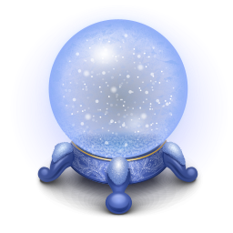

Horoscopey

Aries
About Aries:
Aries is the first sign of the zodiac, and that's pretty much how those born
under this sign see themselves: first. Aries are the leaders of the pack,
first in line to get things going. Whether or not everything gets
done is another question altogether, for an Aries prefers to initiate
rather than to complete.
Traits of Aries:
The people born under the Zodiac Sign Aries are curious,
energetic and enthusiastic individuals, who want to initiate
and make things happen rather than being mere spectators.